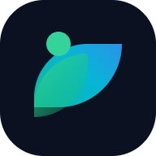

better
פחות מסך. יותר חיים.
להיות באמת עם המשפחה והילדים בבית, ולנהוג בראש שקט ובטוח יותר בכביש — באופן אוטומטי לגמרי.
הורדת האפליקציה לאנדרואיד ↓פותחים את הקישור ב־Safari (⋯ ← פתיחה בדפדפן)
התקנה לאייפון
פתיחת האפליקציה ב־Safari- לוחצים על כפתור השיתוף בתחתית Safari
- בוחרים „הוספה למסך הבית”, ואז פותחים את better ממסך הבית
- זמן איכות עם המשפחה והילדים: מניחים את הטלפון בצד וצוברים דירוג ונקודות על זמן נקי בבית.
- נהיגה בטוחה יותר: זיהוי נסיעה אוטומטי שמתגמל אתכם על כל נסיעה ללא מגע במסך.
איך מתחילים?
יש לך אייפון?- לוחצים על כפתור ההורדה ומתקינים את האפליקציה.
- מתחברים בלחיצה אחת עם חשבון Google.
- מאשרים את ההרשאות באשף הקצר שבתוך האפליקציה.